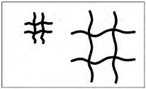
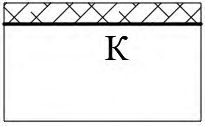

СП 491.1325800.2020 «Аэродромы. Правила обследования технического состояния»
О документе: разработчики, утверждение, регистрация, ключевые слова
СВОД ПРАВИЛ СП 491.1325800.2020
Издание официальное
1 ИСПОЛНИТЕЛИ - ЗАО «ПРОМТРАНСНИИПРОЕКТ», АО «НТК «АЭРОТЕХНИЧЕСКИЙ ЦЕНТР», ФГУП ГПИ и НИИ ГА «Аэропроект»
2 ВНЕСЕН Техническим комитетом по стандартизации ТК 465 «Строительство»
3 ПОДГОТОВЛЕН к утверждению Департаментом градостроительной деятельности и архитектуры Министерства строительства и жилищнокоммунального хозяйства Российской Федерации (Минстрой России)
г.
4 УТВЕРЖДЕН приказом Министерства строительства и жилищнокоммунального хозяйства Российской Федерации от 25 декабря 2020 № 863/пр и введен в действие с 26 июня 2021 г.
5 ЗАРЕГИСТРИРОВАН Федеральным агентством по техническому регулированию и метрологии (Росстандарт)
В случае пересмотра (замены) или отмены настоящего свода правил соответствующее уведомление будет опубликовано в установленном порядке. Соответствующая информация, уведомление и тексты размещаются также в информационной системе общего пользования - на официальном сайте разработчика (Минстрой России) в сети Интернет
© Минстрой России, 2020
Настоящий нормативный документ не может быть полностью или частично воспроизведен, тиражирован и распространен в качестве официального издания на территории Российской Федерации без разрешения Минстроя России
СП 491.1325800.2020
Дата введения - 2021-06-26
УДК [625.717]
ОКС 93.120
Ключевые слова: аэродром, водоотводные и дренажные системы, дефект, обследование, оценка технического состояния
Руководитель организации-разработчика ЗАО «ПРОМТРАНСНИИПРОЕКТ»
| Исполнительный директор | Исполнительный директор | А.Ю. Эглескалн |
|---|---|---|
| Руководитель разработки | Зам. директора по науке | Л.А. Андреева |
| Исполнитель | Начальник отдела комплексных исследований, стандартизации и логистики | И.П. Потапов |
Введение
6 ВВЕДЕН ВПЕРВЫЕ
Настоящий свод правил разработан в целях обеспечения соблюдения требований Федерального закона от 30 декабря 2009 г. № 384-ФЗ «Технический регламент о безопасности зданий и сооружений» и с учетом требований федеральных законов от 27 декабря 2002 г. № 184-ФЗ «О техническом регулировании», от 22 июля 2008 г. № 123-ФЗ «Технический регламент о требованиях пожарной безопасности», от 29 июня 2015 г. № 162-ФЗ «О стандартизации в Российской Федерации».
Свод правил разработан авторским коллективом ЗАО «ПРОМТРАНСНИИПРОЕКТ» (руководитель темы -д-р техн. наук Л.А. Андреева , И.П. Потапов, И.В. Музыкин, А.О. Иванова ), АО «НТК «АЭРОТЕХНИЧЕСКИЙ ЦЕНТР» (руководитель темы - канд. техн. наук В.Н. Вторушин , канд. техн. наук Д.А. Смирнов , А.Е. Григорьев, Д.А. Павлов, Г.Д. Шумилова ), ФГУП ГПИ и НИИ ГА «Аэропроект» (руководитель темы канд. техн. наук М.Д. Суладзе , д-р техн. наук А.П. Виноградов , канд. техн. наук Н.С. Ледовская , канд. техн. наук В.А. Сабуренкова , А.Ю. Бочарова, Ю.Б. Скоробогатая, Э.С. Цопанов ), ФГУП «ГВСУ № 7» (канд. техн. наук С.А. Буянов ), АО Управляющая компания «Аэропорты регионов» (канд. техн. наук С.А. Пузатов ), ФГУП «АГА (А)» (канд. техн. наук В.А. Попов ).
1Область применения
Настоящий свод правил распространяется на проведение обследования технического состояния элементов летных полей (аэродромных покрытий, грунтовых элементов летных полей, водоотводных и дренажных систем) аэродромов, вертодромов и посадочных площадок и устанавливает требования к выполнению работ по сбору, обработке и анализу данных о состоянии объектов обследования.
2Нормативные ссылки
В настоящем своде правил использованы нормативные ссылки на следующие документы:
ГОСТ 166-89 Штангенциркули. Технические условия
ГОСТ 427-75 Линейки измерительные металлические. Технические условия
ГОСТ 7502-98 Рулетки измерительные металлические. Технические условия
ГОСТ 9128-2013 Смеси асфальтобетонные, полимерасфальтобетонные, асфальтобетон, полимерасфальтобетон для автомобильных дорог и аэродромов. Технические условия
ГОСТ 10060-2012 Бетоны. Методы определения морозостойкости
\_\_\_\_\_\_\_\_\_\_\_\_\_\_\_\_\_\_\_\_\_\_\_\_\_\_\_\_\_\_\_\_\_\_\_\_\_\_\_\_\_\_\_\_\_\_\_\_\_\_\_\_\_\_\_\_\_\_\_\_
Aerodromes. Rules of inspection of the technical condition
СП 491.1325800.2020
ГОСТ 10180-2012 Бетоны. Методы определения прочности по контрольным образцам
ГОСТ 10528-90 Нивелиры. Общие технические условия
ГОСТ 12071-2014 Грунты. Отбор, упаковка, транспортирование и хранение образцов
ГОСТ 12730.1-78 Бетоны. Методы определения плотности
ГОСТ 12801-98 Материалы на основе органических вяжущих для дорожного и аэродромного строительства. Методы испытаний
ГОСТ 17624-2012 Бетоны. Ультразвуковой метод определения прочности
ГОСТ 18105-2018 Бетоны. Правила контроля и оценки прочности
ГОСТ 19912-2012 Грунты. Методы полевых испытаний статическим и динамическим зондированием
ГОСТ 20276-2012 Грунты. Методы полевого определения характеристик прочности и деформируемости
ГОСТ 22690-2015 Бетоны. Определение прочности механическими методами неразрушающего контроля
ГОСТ 22904-93 Конструкции железобетонные. Магнитный определения толщины защитного слоя бетона и расположения арматуры метод
ГОСТ 24452-80 Бетоны. Методы определения призменной прочности, модуля упругости и коэффициента Пуассона
ГОСТ 26433.0-85 Система обеспечения точности геометрических параметров в строительстве. Правила выполнения измерений. Общие положения
ГОСТ 26433.1-89 Система обеспечения точности геометрических параметров в строительстве. Правила выполнения измерений. Элементы заводского изготовления
ГОСТ 26433.2-94 Система обеспечения точности геометрических параметров в строительстве. Правила выполнения измерений параметров зданий и сооружений
ГОСТ 28570-2019 Бетоны. Методы определения прочности по образцам, отобранным из конструкций
ГОСТ 30416-2012 Грунты. Лабораторные испытания. Общие положения ГОСТ 31937-2011 Здания и сооружения. Правила обследования и мониторинга технического состояния
ГОСТ Р 53340-2009 Приборы геодезические. Общие технические условия ГОСТ Р 56925-2016 Дороги автомобильные и аэродромы. Методы измерения неровностей оснований и покрытий
СП 47.13330.2016 «СНиП 11-02-96 Инженерные изыскания для строительства. Основные положения»
СП 121.13330.2019 «СНиП 32-03-96 Аэродромы»
СП 129.13330.2019 «СНиП 3.05.04-85* Наружные сети и сооружения водоснабжения и канализации»
СП 446.1325800.2019 Инженерно-геологические изыскания для строительства. Общие правила производства работ
Примечание - При пользовании настоящим сводом правил целесообразно проверить действие ссылочных документов в информационной системе общего пользования -на официальном сайте федерального органа исполнительной власти в сфере стандартизации в сети Интернет или по ежегодному информационному указателю «Национальные стандарты», который опубликован по состоянию на 1 января текущего года, и по выпускам ежемесячного информационного указателя «Национальные стандарты» за текущий год. Если заменен ссылочный документ, на который дана недатированная ссылка, то рекомендуется использовать действующую версию этого документа с учетом всех внесенных в данную версию изменений. Если заменен ссылочный документ, на который дана датированная ссылка, то рекомендуется использовать версию этого документа с указанным выше годом утверждения (принятия). Если после утверждения настоящего свода правил в ссылочный документ, на который дана датированная ссылка, внесено изменение, затрагивающее положение, на которое дана ссылка, то это положение рекомендуется применять без учета данного изменения. Если ссылочный документ отменен без замены, то положение, в котором дана ссылка на него, рекомендуется применять в части, не затрагивающей эту ссылку. Сведения о действии сводов правил целесообразно проверить в Федеральном информационном фонде стандартов.
3Термины, определения и сокращения
В настоящем своде правил применены термины по ГОСТ 31937 и СП 121.13330, а также следующий термин с соответствующим определением:
- 3.1.1 дефект
- Отдельное несоответствие конструкции аэродромного покрытия или элемента водоотводной и дренажной системы параметрам, установленным нормативными требованиями или проектом. В настоящем своде правил применены следующие сокращения: ВДС - водоотводная и дренажная система; ВПП - взлетно-посадочная полоса; ВС - воздушное судно; ПАГ - плита аэродромная гладкая; МРД - магистральная рулежная дорожка; МС - место стоянки; РД - рулежная дорожка; ACN - классификационное число воздушного судна; PCN - классификационное число аэродромного покрытия.
4Общие положения
- обнаружения дефектов в ходе строительства;
- возобновления прерванного строительства при отсутствии консервации объекта (при перерыве в строительстве более 3 мес) или при ее продолжительности от 0,5 года и более;
- предстоящей реконструкции или капитального ремонта;
СП 491.1325800.2020
- планирования работ по текущему ремонту в составе эксплуатационного содержания аэродромных сооружений;
- планирования увеличения эксплуатационной нагрузки или интенсивности выполнения взлетно-посадочных операций на аэродромных покрытиях;
- после воздействия стихийных бедствий природного характера или техногенных аварий;
- инициативы заказчика (собственника или оператора аэродрома).
- подготовительные работы;
- визуальное обследование;
- инструментальное обследование.
На основе результатов визуального обследования устанавливается необходимость проведения инструментального обследования, его цели, задачи и объемы, а также разрабатывается программа инструментального обследования.
В зависимости от поставленных целей и задач работы по обследованию могут ограничиваться проведением только визуального обследования.
Исполнителем обследования на основании утвержденного технического задания разрабатывается программа работ по обследованию, которая согласовывается заказчиком работ и утверждается руководителем организации исполнителя обследования.
В программе инструментального обследования указывают: перечень подлежащих обследованию элементов летного поля аэродрома; места и методы инструментальных измерений и испытаний; необходимость проведения инженерно-геологических, инженерно-геодезических и других видов
СП 491.1325800.2020 изысканий; места отбора образцов материалов; состав исследований образцов в лабораторных условиях; перечень необходимых поверочных расчетов; мероприятия по обеспечению техники безопасности при выполнении обследования.
Примечание При сокращении заказчиком объемов обследования, снижающем достоверность заключения о техническом состоянии объекта, заказчик сам несет ответственность за снижение достоверности результата обследования согласно ГОСТ 31937.
5Подготовительные работы
СП 491.1325800.2020
6Визуальное обследование аэродромных покрытий элементов летного поля
В зависимости от целей и задач обследования, а также утвержденного технического задания выделяется:
- сплошное визуальное обследование;
- выборочное визуальное обследование.
При сплошном методе визуальное обследование выполняется по всей площади элемента аэродрома, при выборочном - по контрольным участкам.
- визуальный осмотр и выявление дефектов поверхности покрытий и прилегающих грунтовых участков летного поля, с расположенными на них элементами ВДС;
- проведение измерений параметров, характеризующих дефекты поверхности покрытий;
- фиксация дефектов средствами объективной регистрации;
- составление планов и ведомостей дефектов;
- оценка технического состояния элементов летного поля;
- составление заключения по результатам визуального обследования.
СП 491.1325800.2020
План дефектов для элемента с покрытием жесткого типа составляется с учетом фактической раскладки плит с указанием: осевых линий (для ВПП, РД, МРД), пикетов (для ВПП и МРД), путей руления ВС и спецтранспорта на перроне (при необходимости), границ элемента, участков примыкания других элементов. Для продольных рядов плит применяют буквенные обозначения, для поперечных - цифровые, при этом, в случае наличия, используют принятую на аэродроме нумерацию рядов плит и пикетов.
На плане дефектов для элемента с асфальтобетонным покрытием (смешанный и нежесткий тип конструкции) в качестве ориентиров привязки дефектов наносятся пикеты и осевые линии (для ВПП, МРД, РД), а также указываются огни светосигнального оборудования (при наличии), технологические и деформационные швы (при наличии), дневная маркировка мест стоянок и путей руления ВС на перроне и площадках специального назначения.
Для привязки плана дефектов элемента аэродрома к общему плану летного поля составляется схема аэродромных покрытий с обозначением всех элементов, подлежащих обследованию, и разбивкой их на участки (листы).
Классификацию и графическое изображение дефектов на планах выполняют в соответствии с приложениями А и Б.
Дефекты, занимающие определенную площадь на поверхности покрытия (разрушение поверхности покрытия (шелушение и эрозия), сетка трещин и др.), указываются в масштабе.
СП 491.1325800.2020 сколов кромок плит, разрушения поверхности покрытия и т.д. измеряют с помощью линеек по ГОСТ 427, рулеток по ГОСТ 7502 и т.д.
Для измерения ширины раскрытия трещин используются линейки, лупы с масштабным делением или другие приборы и инструменты, обеспечивающие точность измерений не ниже 0,1 мм. Для определения ширины раскрытия трещины выборочно производят 3 замера в местах ее наибольшего раскрытия.
Глубину трещин устанавливают с использованием игл и проволочных щупов. При необходимости глубина трещин может быть установлена выбуриванием кернов.
Ширину деформационных швов измеряют линейками по ГОСТ 427 или штангенциркулями по ГОСТ 166.
Неровности покрытия измеряются трехметровой рейкой и промерником в соответствии с ГОСТ Р 56925.
В ходе автоматизированного обследования производится видеосъемка или лазерное сканирование поверхности покрытия с помощью оборудования высокого разрешения, установленного на транспортное средство. Результаты фото/видеофиксации обрабатываются камерально с применением программного обеспечения, предназначенного для обработки фотои видеоматериалов, с распознаванием дефектов и визуализацией планов дефектов на бумажных и электронных носителях. Допускается использование специализированных аппаратно-программных комплексов, обеспечивающих идентификацию и классификацию дефектов покрытий в автоматическом режиме с целью создания базы данных и прогнозирования дальнейшего состояния покрытий, и планирование мероприятий по текущему, капитальному ремонту или реконструкции покрытий.
СП 491.1325800.2020
Данные автоматизированного обследования при необходимости могут быть уточнены путем выборочного визуального обследования на контрольных участках.
В ведомости дефектов по всему элементу аэродрома, по пикетам (выделенным участкам покрытия) указывается вид дефектов, количество плит с данными разрушениями (для цементобетонного покрытия), а также суммарный размер дефектов в следующих единицах измерения: м² - сетка трещин, разрушение поверхности и оголение арматуры, D-образное растрескивание, наплывы герметизирующих материалов, выбоины, сколы кромок плит, колейность, просадки; шт. -раковины, плиты покрытия с просадками, проломами и короблением, отколами углов и краев, разрушенные плиты и плиты, имеющие уступы в швах; м - трещины, участки с нарушенной герметизацией швов; мм - максимальная величина уступа в швах и сквозных трещинах, колеи асфальтобетонного покрытия.
В сводной ведомости дополнительно указывается процент плит с дефектами от общего количества плит покрытия для цементобетонного покрытия и процент поврежденной площади для асфальтобетонного покрытия на каждом элементе аэродрома.
- общие сведения об объекте;
- планы и ведомости дефектов по каждому элементу аэродрома;
- описания, фотографии дефектных участков аэродромных покрытий;
- анализ вероятных причин появления дефектов;
- оценку технического состояния аэродромных покрытий и грунтовых участков летного поля с установлением участков, находящихся в неудовлетворительном состоянии (при наличии);
- оценку возможности и условия дальнейшей эксплуатации обследуемых элементов летного поля;
- оценку работы деформационных швов, качества и состояния их герметизации;
- рекомендации по проведению инструментального обследования (при необходимости);
- рекомендации по проведению первоочередных мероприятий на обследуемых элементах летного поля для обеспечения безопасной эксплуатации ВС;
- рекомендации по проведению мониторинга технического состояния покрытий для контроля динамики развития дефектов;
- своевременного принятия мер по поддержанию требуемого технического состояния.
7Инструментальное обследование аэродромных покрытий элементов летного поля
7.1Состав работ по инструментальному обследованию
СП 491.1325800.2020 неудовлетворительному состоянию отдельных участков аэродромных покрытий, включая грунтовые основания.
Основанием для проведения инструментального обследования может стать динамика накопления и развития дефектов, выявленная при периодических обследованиях, или плановая проверка эксплуатационнотехнического состояния.
- установление фактической схемы летного поля с уточнением фактических геометрических размеров обследуемых элементов летного поля и участков с различными конструкциями покрытия;
- составление плана дефектов (в случае отсутствия данных результатов в материалах визуального обследования);
- геодезическую съемку (геометрическое нивелирование) поверхности покрытий, имеющих участки с нарушениями рельефа проектной поверхности;
- короткошаговое нивелирование поверхности аэродромных покрытий ВПП с целью определения обобщенной характеристики ровности продольных профилей ВПП и установления величин продольных и поперечных уклонов, их сочетаний;
- отбор образцов материалов (кернов) покрытия и укрепленного искусственного основания с установлением фактических толщин конструктивных слоев, лабораторные исследования образцов материалов с определением их физико-механических характеристик, морозостойкости, водостойкости, коррозионной стойкости (при необходимости);
- оценка фактических прочностных характеристик материалов покрытия и укрепленных искусственных оснований инструментальными методами;
- натурные испытания покрытий статической нагрузкой с использованием воздушного судна или специальной техники, штамповые
СП 491.1325800.2020 испытания, испытания методом динамического нагружения с использованием дефлектометров;
- выявление скрытых дефектов покрытий и искусственных оснований инструментальными методами (ультразвуковой, георадиолокационный и др.), вскрытие участков со скрытыми дефектами;
- инженерно-геологические изыскания, включая геофизические исследования, с целью подтверждения или установления общего инженерногеологического строения участка, выявления его неоднородности, определения распространения и глубины залегания грунтовых вод, определения и выявления изменений физико-механических свойств грунтов лабораторными методами и посредством полевых испытаний (штамповые испытания, статическое и динамическое зондирование);
- расчеты несущей способности покрытий и обобщенной характеристики ровности (при необходимости);
- теплотехнические расчеты оснований на вечномерзлых и пучинистых грунтах, расчеты по определению сжимающих напряжений в основаниях на просадочных грунтах (при необходимости);
- расчеты деформационных швов расширения (при необходимости);
- анализ полученных результатов инструментального обследования;
- составление итогового документа (заключения или технического отчета) с выводами по результатам инструментального обследования.
- общие сведения об объекте обследования;
- сведения об эксплуатационных нагрузках и воздействиях;
- оценку технического состояния элементов летного поля с учетом технического состояния и работоспособности элементов ВДС;
- описание основных дефектов с указанием их видов, количества и параметров;
- обоснование наиболее вероятных причин появления дефектов с прогнозом их развития;
- рекомендации по устранению выявленных дефектов и их причин, а также рекомендации по текущему, капитальному ремонту или реконструкции элементов летного поля;
- рекомендации по организации мониторинга за техническим состоянием элементов летного поля (при необходимости);
- оценку возможности эксплуатации ВС на обследуемых элементах летного поля.
К заключению прилагаются:
- техническое задание (программа) инструментального обследования;
- обмерные чертежи и схемы, планы и ведомости дефектов, планы ремонта и т. п.;
- протоколы результатов лабораторных испытаний прочностных характеристик материалов покрытий и искусственных оснований, определений физико-механических свойств грунтов, морозостойкости, водостойкости, коррозионной стойкости (при необходимости), результаты геометрического нивелирования, определения наличия скрытых дефектов покрытий, испытаний покрытий статической нагрузкой и т. п.;
- результаты расчетов несущей способности и обобщенной характеристики ровности покрытий;
- геотехнические и теплотехнические расчеты оснований в особых инженерно-геологических условиях;
- расчеты деформационных швов расширения;
- фотоиллюстрации, профили, разрезы и т. п.
7.2Содержание и требования к выполнению работ по инструментальному обследованию
Уточнение фактических геометрических размеров осуществляется путем натурных обмерных работ с использованием имеющихся рабочих чертежей, исполнительных схем и материалов геодезических отчетов.
Для обмерных работ используются стальные рулетки по ГОСТ 7502, складные трехметровые рейки с делениями и, при необходимости, геодезические инструменты (теодолиты, нивелиры, тахеометры) по ГОСТ Р 53340, ГОСТ 10528.
При проведении обмерных работ следует соблюдать требования ГОСТ 26433.0, ГОСТ 26433.1 и ГОСТ 26433.2.
При измерении алгебраической разности уклонов смежных плит нивелирование проводится с шагом, равным длине плиты. На участках с нарушением рельефа проектной поверхности нивелирование выполняется с шагом, кратным длине плиты или равным 5 м (для нежестких покрытий).
Результаты нивелирования поверхности покрытий оформляются графически в виде таблиц, продольных и поперечных профилей покрытий и грунтовых участков летного поля, планов вертикальных отметок поверхности покрытий и грунтовых участков в изолиниях.
Короткошаговое нивелирование проводится методом геометрического нивелирования поверхности (профилей) покрытий с использованием оптических, электронных геодезических приборов, средств геопространственного позиционирования или методом лазерного сканирования.
Допускается получать исходные данные высотных отметок точек продольных профилей путем прокатки по поверхности покрытия специальных устройств (например, дорожного профилометра в соответствии с ГОСТ Р 56925), не предназначенных для применения в качестве средств измерений и в добровольном порядке подвергаемых поверке и калибровке.
Обобщенную характеристику ровности определяют для трех продольных профилей ВПП, расположенных: один профиль - на оси ВПП, два других - параллельно оси, на расстоянии 3-5 м слева и справа от нее.
Обработку данных и вычисление обобщенной характеристики ровности проводят методами спектрального анализа.
- установления состава и фактических толщин конструктивных слоев покрытия и укрепленного искусственного основания;
- визуальной оценки состояния материалов покрытия и укрепленного искусственного основания;
- лабораторного определения физико-механических характеристик;
- оценки наличия следов коррозионных процессов в бетоне, проведения химических исследований компонентов, реакционной активности вяжущего и инертных заполнителей, обнаружения и анализа новообразований.
СП 491.1325800.2020
Фактические толщины конструктивных слоев по отобранным образцам определяются непосредственным замером стальными линейками по ГОСТ 427 или рулетками по ГОСТ 7502.
Определение прочности бетонов различных видов по образцам, отобранным из слоев покрытия и укрепленного основания, проводится по ГОСТ 28570, ГОСТ 10180 и ГОСТ 18105. Определение морозостойкости бетонов регламентируется ГОСТ 10060. В случае необходимости модуль упругости бетонов определяют по ГОСТ 24452, плотность - по ГОСТ 12730.1.
Состав и структуру бетона определяют специальными методами химического, физико-химического и микроскопического анализа бетона.
Для проверки и определения системы армирования железобетонных монолитных конструкций используют неразрушающие методы согласно 7.2.5 и/или осмотр образцов.
Определение характеристик асфальтобетона по образцам, отобранным из покрытия, проводится в соответствии с ГОСТ 9128 и ГОСТ 12801.
Участки отбора образцов и количество отбираемых образцов устанавливаются программой обследования и согласовываются с заказчиком.
Количество отбираемых образцов должно быть достаточным для проведения испытаний в соответствии с требованиями ГОСТ 28570, ГОСТ 10180, ГОСТ 18105 и ГОСТ 10060 и составлять:
- не менее 3 образцов на 1000 пог. м и не менее 3 образцов на участок с одним типом конструкции покрытия для ВПП и МРД;
- не менее 3 образцов для РД длиной 500 м и менее;
- не менее 1 образца на 15 000 м² и не менее 3 образцов на участок с одним типом конструкции покрытия для перронов.
Места отбора образцов могут быть определены c учетом результатов применения неразрушающих методов определения прочности.
После отбора образцов необходимо восстановить целостность аэродромного покрытия с применением бетонных, асфальтобетонных смесей или ремонтных материалов.
К неразрушающим методам определения прочности относятся методы:
- упругого отскока;
- пластических деформаций;
- ударного импульса;
- отрыва;
- отрыва со скалыванием;
- ультразвуковой.
Ультразвуковой метод определения прочности регламентируется ГОСТ 17624. При этом прочность бетона определяют по экспериментально установленным градуировочным зависимостям косвенного показателя (скорость или время распространения ультразвука) от прочности бетона, установленной по результатам испытаний образцов.
Ультразвуковой метод применяют также для оценки глубины распространения трещин в покрытиях.
Для определения системы армирования в железобетонных покрытиях используют магнитный метод по ГОСТ 22904.
Испытания покрытий проводятся их нагружением через жесткий металлический штамп круглой формы или путем накатки основной опоры ВС или специальной техники с заданной нагрузкой на опору или колесо.
СП 491.1325800.2020
Штамповые испытания покрытий проводятся с учетом методики, изложенной в ГОСТ 20276. При этом в состав испытательного оборудования входят собственно штамп, гидравлический домкрат с манометром для контроля нагрузки и нагружающее устройство. Штамп должен иметь плоскую подошву с упругой прокладкой для обеспечения плотного прилегания к поверхности покрытия или устанавливаться при испытаниях методом притирки по слою мелкозернистого песка. Гидравлический домкрат должен обеспечивать передачу на штамп нагрузки не менее 200÷250 кН с поддержанием ее значения на ступени испытания в пределах погрешности манометра (не более 5 %). При нагружении покрытия должно быть исключено влияние соседних колес нагружающего устройства. Удаление ближайших колес устройства от оси штампа должно составлять не менее 5 диаметров штампа. В состав испытательного оборудования должно входить также устройство для центрирования нагрузки на штамп. Максимальная нагрузка в процессе испытаний не должна превышать предельно допустимой величины для данной конструкции покрытия, рассчитанной согласно СП 121.13330.
Испытания с использованием ВС или аэродромной техники проводятся в соответствии с утвержденной программой обследования.
В процессе испытаний измеряются вертикальные деформации поверхности покрытия с использованием средств высокоточного геометрического нивелирования, соответствующих требованиям ГОСТ 10528.
Во всех случаях участки проведения испытаний должны:
- не иметь видимых дефектов поверхности покрытия (трещин, эрозии поверхности и т.п.);
- находиться в зонах приложения нагрузок от основных опор эксплуатируемых ВС.
Количество мест проведения испытаний на элементах летного поля должно назначаться из условия обеспечения достоверности получаемых результатов, с учетом наличия участков с различными конструкциями. Для
СП 491.1325800.2020 соединительных РД и МС минимальное количество мест испытаний должно составлять не менее 3 в случае однотипного покрытия, для ВПП и МРД - не менее 9, в том числе не менее 3 на среднем участке и не менее 3 на каждом из концевых участков.
7.3Инженерно-геологические и геофизические работы при обследовании элементов летного поля
- подтверждение (проверка) общего инженерно-геологического (геокриологического) строения района работ;
- определение распространения и глубины залегания грунтовых вод;
- выявление изменений физико-механических свойств грунтов.
Оборудование, способы проходки и необходимость крепления стенок скважин определяются в зависимости от вида грунтов.
При необходимости производится отбор проб грунта нарушенной и ненарушенной структуры для лабораторных исследований. Количество проб определяется с учетом полноты имеющихся материалов изысканий прошлых лет.
Определение распространения и глубины залегания грунтовых вод осуществляется фиксированием появившегося и установившегося уровней грунтовых вод по опорным и промежуточным инженерно-геологическим скважинам. Особое внимание уделяется выявлению новообразованных (техногенных) горизонтов грунтовых вод, их распространению по площади и глубине, характеру взаимодействия с природными горизонтами и грунтами.
С целью определения изменений физико-механических свойств грунтов за период эксплуатации элементов летного поля проводится проходка промежуточных инженерно-геологических выработок с отбором проб грунта ненарушенной и нарушенной структуры для лабораторных исследований. Отбор образцов грунта, их упаковка, хранение и транспортирование проводится в соответствии с ГОСТ 12071. Число, объемы и размеры образцов грунта должны быть достаточными для проведения комплекса лабораторных испытаний по ГОСТ 30416.
Места заложения инженерно-геологических выработок согласовываются заказчиком, ответственные представители которого в письменной форме подтверждают согласование на производство работ.
Расположение скважин на ВПП следует проводить вдоль кромок на участках, определенных программой обследования. В случае необходимости по согласованию с заказчиком проводится также бурение скважин по оси полосы и ее поперечникам.
На групповых и индивидуальных МС, площадках специального назначения и на РД количество выработок определяется программой обследования в зависимости от сложности инженерно-геологических условий, но не менее 1 скважины на один элемент.
С целью определения механических характеристик грунтов (коэффициент постели, модуль упругости) в естественных условиях залегания проводятся штамповые испытания на обочинах покрытий (в шурфах и на поверхности) или испытания динамическим зондированием (пенетрационные испытания) на обочинах или через отверстия в покрытии. Указанные
СП 491.1325800.2020 испытания проводятся в соответствии с ГОСТ 20276 и ГОСТ 19912 соответственно.
Составной частью изыскательских работ при обследовании элементов летного поля является определение распространения и глубины залегания грунтовых вод, таликовых зон, островной мерзлоты и т.п. и выявление участков, подвергшихся неблагоприятным геологическим процессам. Обследование в районе работ осуществляется на основе топографического плана масштабом 1:5000 с нанесением на него пройденных геологических выработок и участков с неблагоприятными геологическими процессами и явлениями (заболачивание, засоление, карстово-суффозионные процессы и т. п.).
С применением геофизических методов выполняют:
- изучение состава конструкции аэродромного покрытия (определение толщин конструктивных слоев, характера армирования бетона);
- выявление пространственного положения геологических границ;
- определение пространственного положения и свойств локальных неоднородностей в конструкциях и естественном основании (выявление внутренних деструкций слоев покрытия, обнаружение и оконтуривание участков изменения плотности грунтов, обводнения, зон повышенной трещиноватости, карстовых полостей, таликов, перелетков и мерзлых пород, отдельных ледяных включений и т. д.);
- изучение гидрогеологических условий;
- изучение состава, состояния и свойств грунтов;
- изучение инженерно-геологических процессов и их изменений;
- определение местоположения подземных коммуникаций.
В целях корректной интерпретации результатов геофизических исследований выполняется контрольное (заверочное) бурение геологических скважин или проходка шурфов.
Используемая аппаратура должна иметь метрологическую аттестацию и проходить регулярный осмотр и обслуживание с учетом требований изготовителя.
Технические возможности и конструктивные особенности аппаратуры должны соответствовать задачам, решаемым геофизическими методами.
8Оценка технического состояния покрытий элементов летного поля аэродромов
- установление наличия или отсутствия дефектов на поверхности покрытий, включая недопустимые дефекты;
- определение количественных показателей, характеризующих выявленные дефекты, и оценку текущего технического состояния поверхности покрытий по результатам визуального и инструментального обследований;
- определение несущей способности покрытий расчетными методами по результатам испытаний покрытий статической нагрузкой, по результатам отбора и испытаний образцов (кернов), по результатам визуального обследования;
- установление эксплуатационной пригодности элементов летного поля по критериям, характеризующим состояние поверхности покрытий данных элементов, возможность осуществления на них безопасной эксплуатации ВС, и критериям, характеризующим несущую способность покрытий;
- определение обобщенной характеристики ровности продольных профилей ВПП;
СП 491.1325800.2020
- установление категории разрушения покрытий (выполняется только для жестких покрытий в случае их планируемого усиления);
- разработку предложений по дальнейшей эксплуатации элементов летного поля и мероприятиям, направленным на сохранение или восстановление их эксплуатационной пригодности.
О наличии выявленных недопустимых дефектов на эксплуатируемых покрытиях, угрожающих безопасности выполнения полетов, незамедлительно информируют, в том числе в письменном виде, заказчика работ, собственника объекта и эксплуатирующую организацию.
Для количественной оценки текущего технического состояния поверхности покрытий используются следующие критерии:
- индекс сохранения покрытия MI или индекс качества Sк - для жестких покрытий;
- индекс качества покрытия P 0 - для нежестких и смешанных покрытий.
Индекс сохранения покрытия MI и индекс качества Sк устанавливаются в соответствии с приложением В, индекс качества покрытия P 0 - в соответствии с приложением Г.
Оценка текущего технического состояния поверхности покрытий, а также назначение соответствующих мероприятий выполняется в зависимости от величины индексов МI, Sк и Р 0 по таблице 8.1.
Таблица 8.1 Оценка технического состояния поверхности покрытия и рекомендуемые мероприятия
| Индексы МI , S к для жестких покрытий | Индекс Р 0 для нежестких и смешанных покрытий | Техническое состояние поверхности покрытия | Рекомендуемые мероприятия |
|---|---|---|---|
| 4,5 - 5,0 | 0 - 19 | Отличное | Устранять отдельные дефекты. Проводить профилактические работы по обработке поверхности покрытий защитными пропиточными составами для повышения устойчивости поверхностного слоя к воздействию климатических и эксплуатационных факторов |
| 3,5 - 4,5 | 20 - 39 | Хорошее | Проводить текущий ремонт с целью поддержания технического состояния покрытий в пределах ранее установленных индексов |
| 2,5 - 3,5 | 40 - 69 | Удовлетворительное | Проводить текущий ремонт в объемах, необходимых для поддержания технического состояния покрытий, снижения динамики развития дефектов и подготовки материальных ресурсов для капитального ремонта |
| Менее 2,5 | 70 и более | Неудовлетворительное | Выполнение капитального ремонта или реконструкция покрытий (при необходимости - ВДС) элемента аэродрома |
Определение числа РСN следует осуществлять с учетом результатов испытаний покрытий статической нагрузкой, выполняемых в соответствии с указаниями подраздела 7.2.
Допускается определять классификационное число РСN расчетнотеоретическим способом только при наличии достоверных данных по конструкциям аэродромных покрытий, результатов инженерно-геологических и гидрогеологических изысканий в районе аэродрома, а также по результатам испытаний образцов бетона на прочность.
Остаточный срок службы покрытия определяется по формуле
где 𝑇р - расчетное время наступления неудовлетворительного технического состояния;
𝑇ф - фактический срок службы покрытия на момент его обследования и оценки технического состояния.
Расчетное время наступления неудовлетворительного технического состояния определяется по формулам
- для жестких покрытий
- для нежестких и смешанных покрытий
где 𝑀𝐼 , 𝑃0 - индекс сохранения и индекс качества поверхности покрытия на момент обследования покрытия 𝑇ф .
Остаточный срок службы аэродромного покрытия также определяется на основании статистической информации, характеризующей динамику изменения текущего технического состояния покрытия по годам эксплуатации.
На основании результатов ежегодных обследований (мониторинга) покрытия строится график зависимости значений индекса качества ( Sк.i или Р 0) от времени эксплуатации покрытия ( 𝑇𝑖 , годы) - функция износа. Посредством экстраполяции функции износа прогнозируется дальнейшее техническое состояние покрытия и его срок службы. Порядок определения остаточного срока службы аэродромного покрытия с использованием функции износа представлен в приложении Е.
Таблица 8.2 Периодичность выполнения обследований
| Соотношение АСN/PCN | Периодичность обследований, раз в год, не менее |
|---|---|
| 1,0 и менее | 1 |
| 1,0 - 1,25 | 2 |
| Более 1,25 | 4 |
СП 491.1325800.2020 основании проведенной оценки технического состояния покрытий, а также с учетом материалов инструментального обследования, в том числе:
- фактической морозостойкости, водостойкости, коррозионной стойкости и других характеристик материалов слоев покрытия;
- геологического строения и гидрогеологических условий площадки аэродрома;
- фактического состояния и работоспособности элементов ВДС;
- фактического состояния деформационных швов.
9Обследование водоотводных и дренажных систем
При необходимости колодцы очищаются для последующего определения отметок лотков труб и проверки состояния и работоспособности коллекторов и перепусков.
Трассы линейных элементов сети (коллекторы, дренажно-осушительная сеть, водоотводные и нагорные канавы, грунтовые лотки) на схеме должны быть привязаны к пикетажу и контурам покрытий элементов летного поля или к опорной геодезической сети аэродрома.
СП 491.1325800.2020
При выявлении дефектов элементов водосточно-дренажной сети, а также установлении возможных причин их появления руководствуются приложением Е.
В первом случае в смежных смотровых колодцах устанавливают зеркало и фонарь, свет фонаря направляют на зеркало через осматриваемую трубу. По отражению в зеркале выявляют заиливание, засорение или повреждение (просадку) труб.
Во втором случае проверка коллекторов и перепусков путем подачи воды осуществляется при помощи поливомоечной машины или иными техническими средствами. Подача воды по шлангам непосредственно в трубы проводится в колодцах. В процессе испытаний осуществляется контроль за прохождением воды через промежуточные смотровые колодцы и выходом ее
СП 491.1325800.2020 через выходной оголовок. Испытания коллекторов выполняются в соответствии с требованиями раздела 10 СП 129.13330.2019.
Коллекторы больших размеров (диаметром более 800 мм) могут обследоваться визуально.
По результатам обследования должны быть установлены вероятные причины развития дефектов и даны рекомендации по ремонту, реконструкции и эксплуатации элементов ВДС аэродрома.
СП 491.1325800.2020
АПриложение А. Классификация и возможные причины возникновения дефектов аэродромных покрытий
- А.1 Характерными дефектами аэродромных покрытий из цементобетона (армобетона, железобетона) являются:
- трещины продольные, поперечные, угловые, со сколами кромок и без, раскрытые и нераскрытые (волосяные);
- сколы углов и кромок плит;
- шелушение;
- сетка трещин;
- D-образное растрескивание;
- просадка плит;
- уступы кромок плит;
- коробление;
- выбоины;
- раковины;
- оголение арматуры;
- нарушение герметизации швов;
- разрушенные плиты (плиты, разделенные сквозными трещинами на несколько частей, блоков, размером менее 3,75 × 3,75 м);
- разрушенный участок ремонта.
Виды дефектов с указанием возможных причин их возникновения и характером проявления приведены в таблице А.1.
Таблица А.1 Виды дефектов аэродромных покрытий из цементобетона (армобетона, железобетона)
| Вид дефектов | Возможные причины возникновения | Проявление дефекта |
|---|---|---|
| Продольные, поперечные и угловые трещины, трещины, делящие плиту на две и более частей | Воздействие повторяющихся эксплуатационных нагрузок, а также температурные напряжения и недостаточная несущая способность основания | Проявляются в нарушении целостности плит. При двухслойной конструкции покрытия возможно отраженное трещинообразование |
| Сколы углов и кромок плит | В результате: воздействия эксплуатационных нагрузок, засорения швов несжимаемым материалом и возникновения сверхрасчетных напряжений, нарушения технологии строительства | Сколы представляют собой разрушение углов и кромок плит (или раскрытых трещин) в зоне до 0,6 м от шва. Плоскость скола обычно проходит под углом к плоскости грани плиты и не на всю толщину плиты |
| Шелушение | В результате: нарушения технологии укладки и отделки поверхности бетона, применения антигололедных реагентов, агрессивных к бетону, замораживания-оттаивания бетона при его пониженной морозостойкости, температурного воздействия газовоздушных струй авиадвигателей | Шелушение проявляется в отслоении цементного камня с поверхности плиты и последующем оголении крупного заполнителя (щебня). В результате на поверхности плиты появляются неровности глубиной от 0,3 до 4 см. Шелушение дифференцируется по глубине: на поверхностное (глубиной до 0,5 см) и глубокое (свыше 0,5 см), а также по площади распространения на плите: на очаговое и сплошное |
| Сетка трещин | В процессе твердения бетона в результате его усадки при недостаточном уходе за твердением, а также над арматурной сеткой | Сетка трещин, в т.ч. усадочные трещины, представляет собой волосяные трещины (шириной раскрытия до 0,1 мм), как правило, замкнутого контура, длиной от нескольких сантиметров до нескольких десятков сантиметров, которые распространяются не на всю толщину плиты |
| D-образное растрескивание | В результате: щелочной реакции между составляющими цемента и щебня, обжатия бетона при температурных деформациях плит и возникновения сверхрасчетных напряжений | D-образное растрескивание проявляется виде узора (сетки) трещин, идущих параллельно шву в виде концентрических трещин в углу плиты. Вокруг этих трещин может наблюдаться потемнение покрытия вследствие концентрации влаги в |
|---|---|---|
| Просадка плит | В результате деформационных процессов грунтового и/или искусственного основания | Просадка проявляется в виде вертикального смещения плиты или нескольких плит с образованием уступов или понижения поверхности покрытия |
| Уступы кромок плит | Пучение или просадка плит, вызванные неудовлетворительной работой основания или разрушением нижележащего слоя. На сборном покрытии из плит ПАГ - нарушение технологии укладки плит | Уступы кромок плит и трещин представляют собой разницу в высоте краев шва или трещины |
| Коробление | В результате неудовлетворительной работы швов расширения. Коробление также может произойти в зоне прохода линий коммуникаций или дренажа при морозном пучении грунтов | Коробление - подъем края плиты (фрагмента плиты) в районе поперечного шва, сопровождающийся разрушением, скалыванием, выкрашиванием кромки плиты в зоне шва |
| Выбоины | Механическое повреждение покрытия, попадание в бетонную смесь при укладке и отделке посторонних предметов | Выбоины - участок покрытия, от поверхности которого откололся небольшой фрагмент бетона |
| Раковины | Применение в смеси грязного крупного наполнителя (щебня), недостаточная морозостойкость щебня, отклонения в технологии при укладке смеси | Раковины - участок покрытия, на котором произошло отделение крупного заполнителя - щебня или постороннего включения. Как правило, раковина представляет собой лунку округлой формы 1-10 см в диаметре |
| Оголение арматуры (арматурной сетки) | Из-за нарушения технологии выполнения арматурных работ при возведении покрытий и вследствие дефектов бетона (недостаточная толщина защитного слоя, глубокое шелушение, сколы и т.д.) | Оголение арматуры проявляется в выходе на поверхность отдельных арматурных стержней или сетки, которое происходит в местах разрушения защитного слоя бетона |
| Нарушение герметизации швов | Механическое повреждение герметика в швах, старение герметика под воздействием климатических факторов, нарушение (отсутствие) адгезии герметика к стенкам камеры шва вследствие его старения или нарушения технологии заливки | Основными проявлениями нарушения герметизации шва являются: отслоение герметика, выдавливание герметика из шва на поверхность бетона, прорастание травы, отсутствие герметика в шве |
|---|---|---|
| Разрушенные плиты | Эксплуатация сверхрасчетными нагрузками, недостаточная несущая способность покрытия в комплексе с основанием | Плиты разделены сквозными трещинами на несколько частей, блоков, размером менее 3,75 × 3,75 м |
| Примечание - В железобетонных покрытиях трещины шириной раскрытия под проектной нагрузкой менее 0,3 мм не считаются дефектом и не учитываются при оценке технического состояния покрытия. | Примечание - В железобетонных покрытиях трещины шириной раскрытия под проектной нагрузкой менее 0,3 мм не считаются дефектом и не учитываются при оценке технического состояния покрытия. | Примечание - В железобетонных покрытиях трещины шириной раскрытия под проектной нагрузкой менее 0,3 мм не считаются дефектом и не учитываются при оценке технического состояния покрытия. |
А.2 Характерными дефектами аэродромного покрытия с асфальтобетонной поверхностью (нежесткий и смешанный тип покрытия) являются:
- продольные и поперечные трещины, в том числе со сколами кромок;
- отраженные трещины, в том числе со сколами кромок;
- блочное растрескивание;
- сетка трещин (крокодиловая кожа);
- сдвиговые (проскальзывания) трещины;
- эрозия поверхности;
- выбоины;
- колееобразование (колея);
- просадка;
- пучение;
- нарушение герметизации;
- разрушенный участок ремонта.
Виды дефектов с указанием возможных причин их возникновения и характером проявления приведены в таблице А.2.
Таблица А.2 Виды дефектов аэродромных покрытий с асфальтобетонной поверхностью (нежесткий и смешанный типы покрытия)
| Вид дефектов | Возможные причины возникновения | Проявление дефекта |
|---|---|---|
| Продольные трещины | Нарушение технологии укладки смежных полос асфальтобетона, возникновение сжимающих напряжений в асфальтобетоне в период отрицательных температур, старение битумного вяжущего | Продольные трещины идут параллельно осевой линии покрытия элемента аэродрома и, как правило, расположены в технологических швах асфальтобетона |
| Поперечные трещины | Возникновение сжимающих напряжений в асфальтобетоне в период отрицательных температур, старением битумного вяжущего, отражение от швов и трещин нижележащего бетонного слоя в смешанных типах конструкций | Поперечные трещины идут под прямым углом к осевой линии покрытия, перпендикулярно направлению движения ВС. Поперечные трещины также могут быть раскрытыми и волосяными, со сколами кромок и с сеткой трещин вдоль кромок |
| Отраженные трещины | В результате разницы коэффициентов температурного расширения бетона и асфальтобетона | Отраженные трещины - продольные и поперечные трещины образуются в асфальтобетонном слое аэродромных конструкций смешанного типа |
| Блочное растрескивание | В результате сочетания факторов: возникновение температурных напряжений сжатия и растяжения в асфальтобетоне и повышение хрупкости асфальтобетона вследствие старения битумного вяжущего. Как правило, появление этого дефекта не связано с эксплуатационными нагрузками | Блочное растрескивание - сетка трещин, которые делят покрытие на прямоугольные фрагменты. Размер ячейки такой сетки трещин, как правило, находится в пределах 0,3-3 м |
| Сетка трещин («крокодиловая кожа») | В результате накопления остаточных деформаций (прогибов) в асфальтобетонном слое под воздействием эксплуатационной нагрузки с высоким давлением в пневматиках | Дефект представляет собой серию коротких, параллельно идущих трещин, возникающих в зоне прохода основных опор ВС. В результате нагружения покрытия и старения асфальтобетона трещины образуют мелкие продолговатые фрагменты |
| Сдвиговые (проскальзывания) трещины | В результате недостаточной прочности верхнего асфальтобетонного слоя на сдвиговые усилия, нарушения скоростного режима эксплуатации ВС | Внешне трещины представляют сдвиговые трещины (деформации) в виде полумесяца, расположенные поперек направления движения в зоне торможения, разворота ВС или руления на РД |
|---|---|---|
| Эрозия поверхности | В результате старения и выгорания битума под воздействием солнечной радиации или газовоздушной струи от низкорасположенных двигателей ВС | Эрозия поверхности - проявляется в выкрашивании заполнителя (щебня) с поверхности асфальтобетона. Эрозия может быть поверхностной - глубиной до 0,5 см, и глубокой - глубиной 0,5 - 4 см |
| Выбоины | Механическое повреждение поверхности асфальтобетона, очаговое развитие глубокой эрозии (глубиной более 4 см) | Выбоины - локальный участок покрытия, на поверхности которого происходит интенсивное глубокое разрушение |
| Колееобразование (колея) | Накопление остаточных деформаций в слое асфальтобетона от воздействия длительных статических или динамических нагрузок от опор ВС. Наблюдаются, как правило, на местах стоянок ВС. Основная причина - длительная инсоляция и высокие температуры воздуха в летний период эксплуатации | Колееобразование (колея) - представляет собой понижение поверхности покрытия в зоне прохода и остановки пневматиков опор ВС, как правило, на местах стоянок. По краям колеи может произойти выдавливание асфальтобетона |
| Просадка | В результате нарушения технологии строительства (наличие линз льда в насыпи, участков с недоуплотненным грунтовым основанием), локального наличия неучтенных просадочных грунтов, вымывания грунта искусственного или естественного основания. | Просадка - понижение участка покрытия, на поверхности асфальтобетонного слоя |
| Пучение | В результате промерзания обводненных или склонных к пучению грунтов основания за счет неудовлетворительного водоотведения | Пучение - поднятие поверхности покрытия (в виде бугров или плавной протяженной волны). Пучение, как правило, сопровождается растрескиванием асфальтобетона от центра к краям бугра или от вершины поднятия к прилегающей ровной поверхности покрытия |
БПриложение Б. Условные обозначения дефектов аэродромных покрытий
Таблица Б.1 Условные обозначения дефектов жестких покрытий
| Условное обозначение дефекта | Вид дефекта и его параметры |
|---|---|
| Продольная трещина, длина 7 м | |
| Поперечная трещина, длина 5 м | |
| Угловая трещина, длина 2,5 м | |
| Трещина со сколами кромок, длина 6 м | |
| Сетка трещин | |
| D-образное растрескивание | |
| Герметизированная трещина | |
| Скол, размер в плане 0,2×0,1 м | |
| Шелушение глубиной до 0,5 см на всей поверхности плиты | |
| Очаговое (на 40 %поверхности плиты) шелушение глубиной до 1 см |
| Уступ кромок плит высотой 2 см |
|---|
| Коробление края плиты в районе поперечного шва |
| Выбоина, диаметр 20 см |
| Раковина, диаметр 3 см |
| Нарушение герметизации швов |
| Оголение арматуры (одного стержня) |
| Оголение арматуры (сетки или нескольких стержней) |
| Разрушенная плита, подлежит замене |
Таблица Б.2 Условные обозначения дефектов нежестких и смешанных покрытий
| Условное обозначение дефекта | Вид дефекта и его параметры |
|---|---|
| Продольная трещина, длина 3 м | |
| Поперечная трещина, длина 4 м | |
| Трещина с выкрашиванием кромок, ширина зоны выкрашивания 0,3 м | |
| Трещина с сеткой трещин вдоль нее | |
| Блочное растрескивание покрытия - сетка трещин, размер ячейки 2×2 м | |
| Частая сетка трещин («крокодиловая кожа») длиной 10 м | |
| Сдвиговые трещины | |
| Загерметизированная трещина | |
| Эрозия поверхности асфальтобетона глубиной до 1 см на площади 25 м² | |
| Глубокая эрозия поверхности асфальтобетона глубиной 4 см и более на площади 10 м² | |
| Выбоина диаметром 20 см | |
| Колея |
| Просадка |
|---|
| Пучение |
| Разрушенный участок ремонта, размер 0,3×0,6 м |
| Нарушение герметизации шва |
ВПриложение В. Методика оценки технического состояния жестких покрытий
- В.1 Категория технического состояния жестких покрытий оценивается по индексу сохранения покрытия MI или индексу качества Sк .
- В.2 Индекс сохранения покрытия 𝑀𝐼 определяется по формуле
где 𝑛 - общее число плит обследуемого участка; 𝑛𝑖 - число плит с дефектом i -го типа; 𝑎𝑖 - «вес» дефекта i -го типа, устанавливаемый по таблице В.1.
Значение величины «веса» дефекта аi определяется в зависимости от величины дефекта и степени проявления отрицательных факторов на обследуемом участке.
К отрицательным факторам, влияющим на техническое состояние поврежденного аэродромного покрытия, относятся:
- расположение дефектов в зоне интенсивного воздействия опор воздушных судов при взлетах, посадках, рулении и т. д.;
- интенсивное воздействие высоких температур газовоздушных струй ВС;
- проливы топлива и масел при заправках (сливе);
- коррозионное воздействие антигололедных реагентов;
- другие факторы, усугубляющие техническое состояние поврежденных аэродромных покрытий.
Степень проявления отрицательных факторов принимается:
- слабой - при отсутствии воздействия отрицательных факторов;
- средней - при воздействии не более одного отрицательного фактора;
- сильной - при воздействии более одного отрицательных факторов.
Таблица В.1 «Вес» дефекта i -го типа
| Наименование дефекта | Единица измерения | Величина дефекта | Степень проявления отрицательных | «Вес» дефекта а i на покрытиях | «Вес» дефекта а i на покрытиях | «Вес» дефекта а i на покрытиях | «Вес» дефекта а i на покрытиях |
|---|---|---|---|---|---|---|---|
| факторов | монолитных | монолитных | сборных | сборных | |||
| ВПП | и др. | ВПП | и др. | ||||
| РД,МС | РД,МС | ||||||
| Разность уклонов смежных плит | Св. 0,005 до 0,013 | Сильная Средняя Слабая | 10 7 3 | 5 3 2 | 7 4 3 | 3 2 1 | |
| Св. 0,013 до 0,020 | То же | 23 18 14 | 12 9 7 | 19 14 10 | 6 3 2 | ||
| Св. 0,020 до 0,033 | » | 30 25 20 30 | 23 19 14 | 25 20 15 25 | 19 14 10 | ||
| Св. 0,033 | » | 27 23 | 30 27 23 | 22 | 25 22 18 | ||
| Уступы в швах | Высота уступа, мм | Св.3 | » | 18 | 4 | ||
| и трещинах | до 10 Св.10 до 20 Св.20 | » | 6 3 2 21 15 11 | 5 3 2 16 12 9 | 5 3 2 14 11 8 21 16 | 3 3 9 5 3 | |
| до 25 Св.25 | » | 30 25 20 30 27 | 26 21 16 30 27 | 12 25 22 | 20 15 11 25 22 | ||
| Длина | » | 23 4 | 23 | 18 | |||
| 3 | 18 | ||||||
| Сквозные трещины | трещин на единицу площади одной плиты, м/м² | 0,20 и менее | » | 2 | 3 2 1 | 3 2 1 | 2 1 1 4 |
| Св. | Св. 0,20 до 0,40 | » | 6 5 4 | 5 4 3 | 5 4 3 | 3 2 | |
| Сколы кромок | Протяжен- ность сколов в %от периметра плиты | 0,40 15 и менее | » | 7 6 4 | 6 4 3 8 6 | 6 4 3 8 6 | 6 4 3 6 |
| плит, в том числе участки кромок с | » | 10 7 5 | 4 | 4 | 4 3 | ||
| короблением | Св.15 | 8 5 | 9 | ||||
| короблением | до 20 | » | 14 11 8 | 11 8 5 | 11 | 6 4 |
| Св.20 до 30 | Сильная Средняя Слабая | 17 13 9 | 15 12 9 | 14 11 9 | 12 10 8 | ||
|---|---|---|---|---|---|---|---|
| Шелушение | Площадь шелушения в %от площади | 30 и менее | » | 4 3 2 | 3 2 1 | 3 2 1 | 2 1 1 |
| Шелушение | плиты | Св.30 до 70 | » | 6 5 4 | 5 4 3 | 5 4 3 | 4 3 2 |
| Св.70 | » | 7 6 4 | 6 4 3 | 6 4 3 | 6 4 3 | ||
| Выбоины и раковины | Общая площадь дефектов в %от площади | 0,1 и менее | » | 4 3 2 | 3 2 1 | 3 2 1 | 2 1 1 |
| Выбоины и раковины | плиты | Св. 0,1 до 0,3 | » | 6 5 4 | 5 4 3 | 5 4 3 | 4 3 1 |
| Св. 0,3 | » | 7 6 4 | 6 4 3 | 6 4 3 | 6 4 3 | ||
| Разрушенная плита | - | - | - | 35 | 35 | 30 | 30 |
Если на одной плите имеются дефекты различных типов, то при определении индекса МI учитываются дефекты, имеющие максимальный вес.
В.3 Индекс Sk для жестких покрытий рассчитывают по формуле
где 𝑁тр , 𝑁ск , 𝑁ш -число плит соответственно с трещинами, сколами и шелушением поверхности, шт.;
𝑁общ - общее количество плит, подлежащих оценке, шт.;
𝑆тр , 𝑆ск , 𝑆ш - коэффициенты весомости дефекта.
СП 491.1325800.2020
Другие дефекты жесткого покрытия приводятся к одной из трех групп дефектов (трещины, сколы, шелушение поверхности). Например, сетку трещин, раковины и выбоины (общей площадью более 0,3 % площади плиты), Dобразное растрескивание без раскрытия и сколов кромок трещин можно отнести к шелушению. D-образное растрескивание с раскрытием трещин и со сколами кромок, коробление с разрушением, скалыванием, выкрашиванием кромки плиты в зоне шва можно отнести к сколам.
Для коэффициентов весомости дефектов принимаются следующие значения: 𝑆тр = 0,05; 𝑆ск = 0,10; 𝑆ш = 0,03.
Если на одной и той же плите выявлены два или все три типа дефектов, то в части показателей 𝑁тр , 𝑁ск , 𝑁ш ее рассматривают как плиту, на которой выявлена наиболее весомая группа дефектов. Например, если на плите имеются сколы и трещины, то ее учитывают в показателе N ск .
ГПриложение Г. Методика оценки технического состояния нежестких и смешанных покрытий
Индекс качества покрытия P 0 определяется по формуле
где 𝑃𝑖 - показатель состояния по всем видам дефектов, устанавливаемый по таблице Г.1 в зависимости от степени дефектности.
Значения Рi принимаются в пределах, указанных в таблице Г.1, с учетом проявления на обследуемом участке отрицательных факторов различной степени: для слабой и сильной степеней принимаются предельные значения диапазона, для средней - по интерполяции.
Таблица Г.1 Показатель состояния по видам дефектов
| Наименование дефекта | Степень дефектности | Показатель состояния Р i |
|---|---|---|
| Поперечные трещины, включая отраженные | 0 1 2 3 | 0,0 - 0,0 0,0 - 2,4 2,4 - 4,8 4,8 - 7,2 |
| трещины с сеткой трещин вдоль нее Эрозия (выбоины, раковины размером в плане > 50 мм, глубиной > 25 мм, не залитые мастикой) | 0 1 2 3 | 0,0 - 0,0 0,0 - 10,0 10,0 - 20,0 20,0 - 30,0 |
| 4 | 7,2 - 9,6 | |
| Продольные трещины, включая | 0 | 0,0 - 0,0 |
| отраженные | 1 | 0,0 - 4,0 |
| отраженные | 2 | 4,0 - 8,0 |
| отраженные | 3 | 8,0 - 12,0 |
| отраженные | 4 | 12,0 - 16,0 |
| Частая сетка трещин (крокодиловая кожа) с возможными отслоениями асфальтобетона, блочное растрескивание, сдвиговые трещины, ремонтные вставки, | ||
| разрушенные участки ремонта, | 4 | 30,0 - 40,0 |
| разрушенные участки ремонта, | 0 1 2 | 0,0 - 0,0 0,0-4,0 4,0 - 8,0 |
| 3 | 8,0 - 12,0 | |
| 4 | 12,0 - 16,0 |
| Колея | 0 1 2 3 4 | 0,0 - 0,0 0,0 - 3,2 3,2 - 6,4 6,4 - 9,6 9,6 - 12,8 |
Степень дефектности для каждого вида дефектов классифицируется в соответствии с таблицей Г.2.
Таблица Г.2 Степень дефектности по видам дефектов
| Описание дефектов | Показатель поврежден- | Степень дефектности | Степень дефектности | Степень дефектности | Степень дефектности | Степень дефектности |
|---|---|---|---|---|---|---|
| ности | 0 | 1 | 2 | 3 | 4 | |
| Продольные, поперечные (в том числе отраженные) трещины в асфальтобетоне | Среднее расстояние между трещинами, м | Трещины отсутствуют | Более 30 | 15-30 | 5-15 | Менее 5 |
| Сетка трещин, («крокодиловая кожа»), блочное растрескивание, сдвиговые трещины, ремонтные вставки, разрушенные участки ремонта, трещина с сеткой трещин вдоль нее на асфальтобетоне | Процент повреждений площади покрытия | Сетка трещин отсутствует | Менее 5 | 5-20 | 20-50 | Более 50 |
| Эрозия поверхности асфальтобетона | Процент поврежденной площади покрытия | Эрозия отсутствует | Менее 5 | 5-20 | 20-50 | Более 50 |
| Колея в асфальтобетонном покрытии | Глубина колеи, мм | Колея отсутствует | Менее 10 | 10-25 | 25-40 | Более 40 |
ДПриложение Д. Определение остаточного срока службы аэродромного покрытия
Д.1 Построение кривой износа аэродромного покрытия жесткого типа Для покрытий жесткого типа функция износа имеет следующий вид:
где 𝑆𝑘.𝑖 - сигнальная оценка технического состояния на год 𝑇𝑖 ;
𝑇𝑖 - год оценки технического состояния покрытия; α и β - параметры, определяемые для каждого конкретного аэродромного покрытия по формулам:
где 𝑇max -прогнозируемый максимальный срок службы покрытия, определяемый путем построения графика 𝑆𝑘 = 𝑓(𝑇) , соответствующий критическому значению сигнальной оценки 𝑆𝑘 = 2,5 ;
Д.2 Построение кривой износа аэродромного покрытия нежесткого типа
Для покрытий нежесткого и смешанного типа функция износа выражается следующей формулой
где 𝑃0.𝑖 - индекс качества поверхности асфальтобетона на год 𝑇𝑖 ;
𝑇𝑖 - год оценки технического состояния покрытия; α и β - параметры, определяемые для каждого конкретного аэродромного покрытия по формулам
СП 491.1325800.2020 где 𝑇max -прогнозируемый максимальный срок службы покрытия, определяемый путем построения графика 𝑃0 = 𝑓(𝑇) , соответствующий критическому значению индекса 𝑃0 = 70;
где β - параметр, характеризующий скорость снижения оценки технического состояния (или индекса качества поверхности) покрытия от времени эксплуатации: значение β > 1 соответствует медленному снижению оценки; β < 1 - ускоренному снижению оценки; β = 1 - линейной зависимости оценок 𝑆𝑘.𝑖 или 𝑃0 от времени.
Д.3 Если имеются данные 𝑆𝑘.𝑖 или 𝑃0.𝑖 за несколько лет 𝑇𝑖 , то для каждого i -го года определяют свое значение β𝑖 , а затем их усредняют.
Вычисленные значения α и β подставляют в формулы (Д.1) или (Д.4), которые представляет собой функцию износа рассматриваемого покрытия.
Д.4 Для того, чтобы определить потребность ремонтных работ на аэродромном покрытии, необходимо знать индекс качества его поверхности на год обследования 𝑇𝑖 и сравнить ее с данными таблицы 8.1, где дана классификация оценок технического состояния поверхности покрытий.
Если оценка «удовлетворительная» или ниже, рассматриваются варианты ее повышения путем проведения ремонтов. С течением времени степень поврежденности покрытий увеличивается, следовательно, будет увеличиваться трудоемкость ремонтных работ, поэтому при выборе срока проведения ремонта не следует допускать, чтобы на покрытии накапливались дефекты, достигающие недопустимого уровня.
Д.5 Последовательность действий при планирования ремонтных работ с использованием кривой износа аэродромного покрытия жесткого должна быть следующей:
- назначают год проведения ремонта покрытия 𝑇рем ;
- определяют остаточный срок службы покрытия 𝑇ост , начиная от года проведения ремонта:
- по формуле (Д.1) определяют прогнозируемое значение индекса качества поверхности аэродромного покрытия 𝑆𝑘.рем на год ремонта:
- назначают новый (планируемый) срок службы покрытия 𝑇max2 , который ожидается после проведения ремонта, и определяют новый остаточный срок от момента проведения ремонта:
- определяют требуемое значение индекса качества поверхности аэродромного покрытия 𝑆𝑘 для обеспечения работоспособности покрытия до нового срока службы по формуле
- определяют требуемое приращение значения индекса качества к прогнозируемому значению на год проведения ремонта:
- определяют требуемый объем ремонтных работ исходя из условия
где 𝑁тр , 𝑁ск , 𝑁ш - количество плит с трещинами, сколами и поверхностными повреждениями, требующих ремонта (%).
Для того, чтобы повысить сигнальную оценку на требуемую величину, нужно подобрать такое сочетание ремонтируемых плит с дефектами, которое обеспечит выполнение условия (Д.12). При этом следует использовать ведомости дефектов покрытий, составленные непосредственно перед ремонтом. На стадии разработки различных стратегий выполнения ремонтных работ допускается пользоваться статистическими данными о динамике развития различных видов дефектов, полученных в ходе мониторинга. В первую очередь следует устранять те дефекты покрытий, которые оказывают наибольшее влияние на безопасность полетов (например, сколы кромок и углов плит).
Функция износа покрытия после проведения ремонта будет иметь вид:
Д.6 Последовательность действий при планировании ремонтных работ с использованием кривой износа аэродромного покрытия жесткого должна быть следующей:
- назначают год проведения ремонта покрытия 𝑇рем ;
- определяют остаточный срок службы покрытия 𝑇ост , начиная от года проведения ремонта по формуле (Д.7);
- по формуле (Д.4) определяют прогнозируемое значение индекса качества поверхности аэродромного покрытия 𝑃0.рем на год ремонта:
- назначают новый (планируемый) срок службы покрытия 𝑇max2 , который ожидается после проведения ремонта, и определяют новый остаточный срок от момента проведения ремонта по формуле (Д.9);
- определяют требуемое значение индекса качества поверхности 𝑃0.тр для обеспечения работоспособности покрытия до нового срока службы по формуле
- определяют требуемую величину снижения индекса качества ∆𝑃0 за счет ремонта по формуле
- определяют требуемый объем ремонтных работ исходя из условия
Используя ведомости дефектов, подбирают такой объем ремонтных работ, который бы обеспечил выполнение условия (Д.17). В первую очередь ремонтируют те дефекты, которые в наибольшей степени угрожают безопасности полетов (например, частая сетка трещин, эрозия асфальтобетона).
Функция износа покрытия после проведения ремонта будет иметь вид:
Функции износа аэродромных покрытий жесткого и нежесткого типа и их использование при планировании ремонтных работ представлены на рисунках Д.1 и Д.2.
Рисунок Д.1 - Ф ункция износа покрытий жесткого типов при планировании ремонтных работ

Рисунок Д.2 - Ф ункция износа покрытий нежесткого и смешанного типов при планировании ремонтных работ

ЕПриложение Е. Основные дефекты элементов водоотводных и дренажных систем и возможные причины их возникновения
Таблица Е.1 Основные дефекты элементов водоотводных и дренажных систем и возможные причины их возникновения
| Вид дефектов | Возможные причины возникновения | Возможные последствия |
|---|---|---|
| Трещины, просадки и вспучивание плит лотков по кромкам покрытий, просадки и выпирание дождеприемных колодцев | Переувлажнение и вымывание основания, морозное пучение грунтов | Нарушение отвода воды с поверхности покрытий, создание условий для развития повреждений поверхности и снижения несущей способности покрытий |
| Засорение и загрязнение труб коллекторов, перепусков и собирателей | Отсутствие надлежащей эксплуатации, нарушение продольного уклона труб вследствие искривления в процессе строительства или просадки под воздействием колес воздушного судна при ослабленном основании трубы | Выход из строя участков коллекторов ВДС |
| Просадки грунта и промоины по трассам коллекторов и собирателей | Нарушение герметизации стыков элементов коллекторов, вымывание грунта обратной засыпки в трещины и проломы в трубах, выполнение обратной засыпки в процессе строительства без достаточного послойного уплотнения | Сбор поверхностной воды в местах промоин и просадок |
| Заиливание и забивка элементов систем с фильтрующей засыпкой | Естественный процесс, связанный с оседанием в фильтрующей засыпке механических частиц грунта | С течением времени дрены и осушители перестают принимать и проводить воду |
| Повреждение решеток, крышек, трещины на стенках и дне, повреждение швов, нарушение сопряжения труб с колодцем - в дождеприемных, смотровых и тальвежных колодцах | Наезды воздушных судов и автотракторной техники, перекос конструкций при деформациях основания, старение конструкций при длительном сроке службы | Просадки грунта вокруг смотровых и тальвежных колодцев, засорение и загрязнение колодцев |
| Просадки грунта вокруг смотровых и тальвежных колодцев | Вымывание грунта обратной засыпки через трещины и свищи, недостаточное уплотнение грунта при обратной засыпке | Застой воды у колодцев, повреждения колодцев, неровности рельефа на грунтовой части летной полосы |
|---|---|---|
| Засорение и загрязнение дождеприемных, смотровых и тальвежных колодцев | Нарушение правил эксплуатационного содержания | Выход из строя всей водосточно-дренажной сети |
| Размывы и оползание откосов водоотводных и нагорных канав, грунтовых лотков, оголовков коллекторов и перепусков, ограждающих дамб | Нарушение организованного стока вод с прилегающих участков к лоткам и оголовкам, большая скорость течения воды в канавах. Естественное оплывание и недостаточное укрепление откосов, значительная скорость течения паводковых вод, длительное стояние высоких вод у ограждающих дамб | Ухудшение пропускной способности канав и лотков, повреждение оголовков коллекторов и перепусков, создание условий для прорыва паводковых вод через ограждающие дамбы |
| Повреждение конструкций оголовков коллекторов и перепусков | Размыв и оползание откосов, деформации основания при промерзании-оттаивании, просадки основания ввиду переувлажнения, недостаточное уплотнение основания при строительстве | Засорение коллекторов и перепусков, застой воды у оголовков |
| Заиливание и загрязнение грунтовых лотков, водоотводных и нагорных канав | Недостаточные продольные уклоны дна, отсутствие должного эксплуатационного содержания | Затопление грунтовых участков, создание условий для притока воды к покрытиям |
Библиография
- [1] СП 11-105-97 Инженерно-геологические изыскания для строительства. Часть VI. Правила производства геофизических исследований
- [2] Приказ Министерства транспорта Российской Федерации от 25 августа 2015 г. № 262 «Об утверждении Федеральных авиационных правил «Требования, предъявляемые к аэродромам, предназначенным для взлета, посадки, руления и стоянки гражданских воздушных судов»